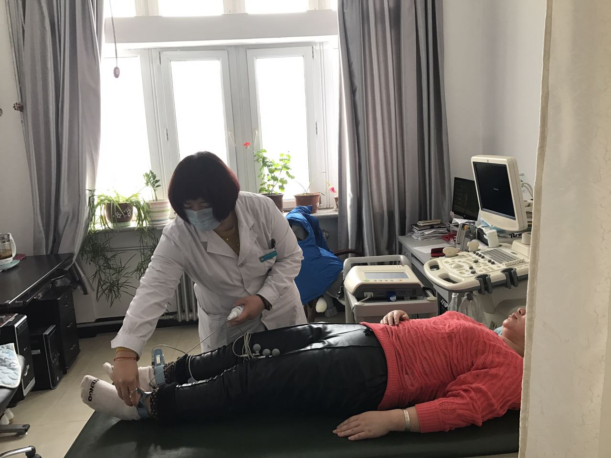

科室介绍
院领导
书记、院长：崔忠太；
宣传委员、副院长：席俊明；
组织委员：吕聿华
院办公室
主任：吕聿华；
成员：李秋、朱江
康复理疗科
医院康复理疗科是集按摩、针刺、刮痧、穴位注射、穴位埋线、穴位贴敷、穴位埋针、刺络放血、拔罐、药物离子导入及特定电磁波照射、氦氖激光治疗仪、神灯、全科治疗仪、中频电疗仪、牵引等多种治疗手段于一体的科室。因其治疗手段多样、范围广泛、安全无副作用，且疗效显著，日益受到广大患者的重视。康复理疗又称为康复物理治疗，是集运动治疗、作业治疗、言语治疗、物理治疗、针灸、拨罐、按摩于一体的综合性治疗室。设有诊疗、牵引、理疗、针灸、康复训练、骨质疏松诊疗、中药熏蒸治疗、疼痛治疗等。开展颈椎病、腰椎病的牵引治疗，三维治疗，针灸，高中低频的电疗磁疗、蜡疗、中药熏蒸、冷冻治疗、推拿、周围神经损伤疤痕粘连的治疗、镇痛治疗，痛风治疗，骨质疏松、中风偏瘫、面瘫、各种周围神经损伤、头痛、三叉神经痛、落枕、颈椎病、腰椎病、肩周炎、网球肘、坐骨神经痛等治疗。
中医科
医院中医科以现代医学知识、手段来继承和发展中医药，采取中西医学相互补充，取长补短，从而用纯中药治疗常见、多发疾病。治疗范围：
（1）内科方面：慢性胃炎、胃溃疡、消化不良；急性肾炎、慢性肾炎、肾结石、急慢性尿路感染、肾盂肾炎；失眠、多梦、记忆力减退、面神经麻癖等。
（2）妇科方面：痛经、月经不调、带下病、产后病、功能失调性子宫出血、乳腺增生、绝经后骨质疏松症等。
（3）外科方面：慢性阑尾炎、慢性肠炎、腰腿痛、骨关节及其周围筋肉损伤与疾病等。
口腔科
医院口腔科设有两台综合治疗仪，医师2人，其中主任医师1人。对口腔科常见病、多发病进行诊疗。医院定期邀请大庆油田总医院口腔科专家出诊，属于医联体科室共建单位。
眼耳鼻喉科
医院有副主任医师1人，主要诊疗有关眼、耳、鼻、咽喉的常见疾病疾病。
内科外科
医院有内科医师6人，其中主任医师2人，副主任医师1人；外科医师2人，其中副主任医师1人。对内外科常见疾病、多发疾病进行诊疗，急危重症患者依据病情转诊上级医院诊疗。
检验科
医院有检验师2人，有先进的生化分析仪、血细胞分析仪及血液粘度动态分析仪等设备。检验科与吉林艾迪康检验中心合作能个开展三甲医院检验科能开展的全部检验项目。
B超、心电
医院有专业医师1人，擅长腹部B超、颈部甲状腺B超检查及常规心电图检查。

X线
医院有放射科医师2人，其中副主任医师1人，具有丰富的X线诊断经验；科室有东软NSX-RF3900多功能数字X线机、原装进口富士医用干式激光相机等设备。
药局
分中药局、西药局2个药局，执行药品“零差价”销售。严格履行处方合法性和用药适宜性审核职责，坚持查对制度，按照操作规程调剂处方药品。

护士站
具有执业护士6人，进行常规护理工作。严格执行临床护理技术规范，全面履行医学照顾、病情观察、协助诊疗、心理支持、健康教育和康复指导等护理职责，为患者提供安全优质的护理服务。
体检中心
接待、组织、安排团体体检、个人体检，以及大学生入学体检和毕业生体检工作。
计划免疫科
科室有医师2人，护士3人；主要从事传染病防控及计划免疫接种工作。
健康小屋
健康小屋全称为“健康体检小屋”，是用于体检测量、干预指导、健康宣教的场所，又称“自助式健康监测室”。通过各项检测可对血压、血糖、MBI（体重指数）、体质类型、骨密度、心脏功能、血液状态、脂肪含量、肺功能、血管功能等进行初步监测，同时数据存储并可进行动态观察。